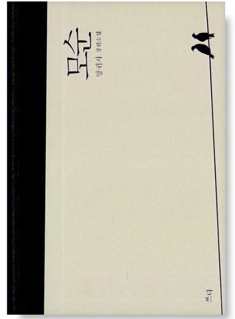

작가: 양귀자 | 출판: 쓰다 | 출간: 1998년 (개정판 2013년)

양귀자의 장편소설 모순은 스물다섯의 안진진이 두 남자 사이에서 고민하며 사랑과 현실, 그리고 삶의 모순을 마주하는 이야기입니다.
일란성 쌍둥이지만 전혀 다른 삶을 사는 어머니와 이모를 바라보며, 진진은 인생이 얼마나 많은 모순으로 가득 차 있는지 깨닫게 됩니다.
1998년 초판 출간 이후 132쇄를 찍으며 지금도 꾸준히 사랑받는 한국 현대소설의 스테디셀러입니다.